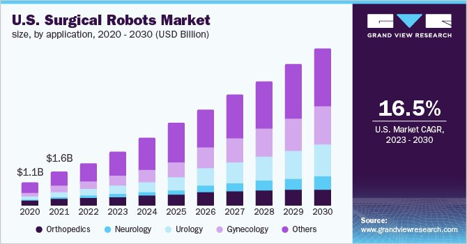
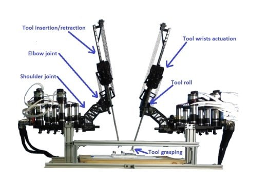

Technology Risks
Cybersecurity Issues – Surgical robots can be hacked
With the demand for medical robots growing exponentially by the year – estimated to reach a staggering market value of US $4.4 billion currently and $40 billion by 2032 (Persistence Market Research, 2022)- it is no surprise that potential threats to the field have grown as well. One such risk is cybersecurity- more specifically, the hijacking of these medical telerobots. All robots are at risk of being hacked, and with the vital information surgical robots contain and share, it is no surprise they are a prime target to cybercrimes.
Figure 1: Market growth overtime
A demonstration of such cyber-attacks was executed by a MIT security research team using the Raven II; a surgical robot manipulated ‘through a control console that includes a video feed and haptic feedback (Globenewswire, 2022).’ The Raven II robot has two long arms that can be manipulated by a surgeon by a control console and communicates using a ‘standard communications protocol for remote surgery known as the Interoperable Telesurgery Protocol over public networks that are potentially accessible to anyone. (Ulster University, n.d.)'
Figure 2: Raven II
Robots like Raven II run on “a single PC running software based on open standards, such as Linux and the Robot Operation System. It communicates with the control console using a standard communications protocol for remote surgery known as the Interoperable Telesurgery Protocol.” These robots are designed to be able to communicate in public networks to be operable in emergency situations, meaning quality of connection is poor, which is where the risk lies (TechnologyReview, 2015).
Generally, FDA approved surgical robots used in tumour removals or delicate cardiovascular surgeries will use a more private communication channel that is harder for attackers to gain access to. However, explained through the results of Raven II, when teleoperated robots are used in emergency situations with public connections, they become significantly easier to break into.
Below are some examples of common cyber attacks:
Commonly referred to as ’man-in-the-middle attacks’ - a type of eavesdropping attack where data transfers are interrupted in the middle of the transfer and attackers pretend to be legitimate participants- methods such as deletion/modification of commands resulted in a wide disruption over the robot’s actions: failure to grab and commands being overridden (Man in the middle attack: Tutorial & examples, n.d.).
During ‘denial-of-service attacks’ - attacks with the purpose of shutting down a machine or network, rendering it useless - unsteady movements and miscalculation of distance or rotation occurred. Complete hijacking of the robot was discovered to be possible as well by accessing and controlling the teleoperated procedures. A single packet of data was proven to be enough to trigger the emergency stop process of the robot (Langston, n.d.).
The implication of these attacks mean that hackers can control the outcome of the surgery, even going as far as to render the surgical procedure impossible. It means attackers will have access to cameras and watch operations, acquiring vital information about patients in the process.
Other risks include:
-
Longer period to prepare for surgery: Extends the time it takes to operate by a few hours. This means that robotic surgery is not applicable to emergency cases or patients who have a complex case that require a surgeon’s intuition more than the detailed hands of a robot (Why is robotic surgery so expensive?, n.d.). This extended operation makes it both physically gruelling for both surgeon and patient- meaning while robotic surgery is highly sought after, it is equally expensive where multiple factors come into play.
-
More expensive (usually $5000 USD increase): Due to the high cost of surgical robots and the skill it takes to operate one, coupled with minimal scarring means the demand for robotic surgery is high and costs skyrocket – most robotic surgeries will cost US $5000 more than being operated on without. Inflated cost of robotic surgery further brings us to another risk in the field of robotic surgery – monopolisation.
-
DaVinci system: Unlike the early 2000s where robotic surgery was a new, rapidly growing field with multiple competition, the field has long since been dominated by Intuitive and their DaVinci Robotic Surgical System. With each robot valued at a staggering US $2.6 million and an additional $6000 to train a single surgeon, the cost of robotic surgery only continues to rise where a single company based in California decides the direction to steer the field (Adams, K, 2021). There are also technological concerns surrounding this system. The Manufacturer and User Device Experience (MAUDE) has records of thousands of incidents related to surgeries using DaVinci systems, ranging from error code bugs to patient deaths. These reports have been filed by manufacturers, health care facilities, patients and lawyers. MAUDE shows that from 2012-2017, there were 30 reports of incidents in which the patient died in surgery using the DaVinci system. The FDA revceived more than 8,000 reports of robotic surgery malfunctions during a 14- year period where more than 10% of the times in complex surgeries concerning organs such as the heart or nerves, surgeons sometimes had to wait for the system to restart or switch to non-robotic methods entirely (Silvestrini & Miller, 2017).
written by Soyun Cho
edited by Soyun Cho, Nathaniel Askew